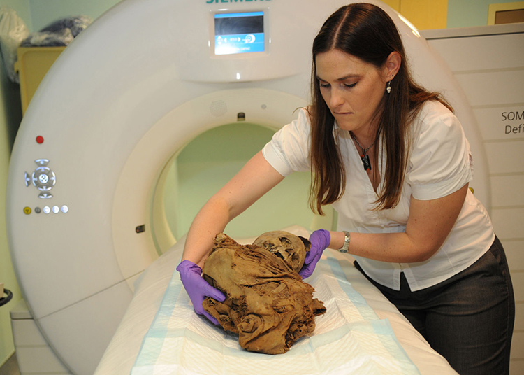
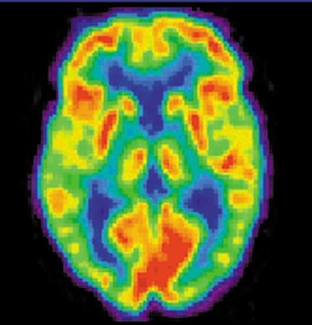
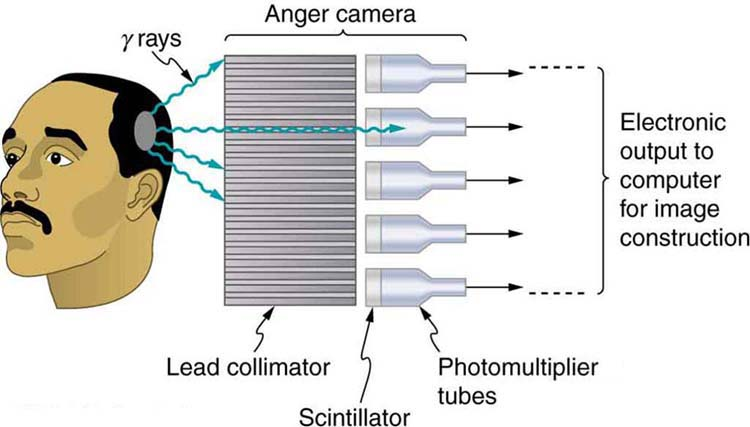
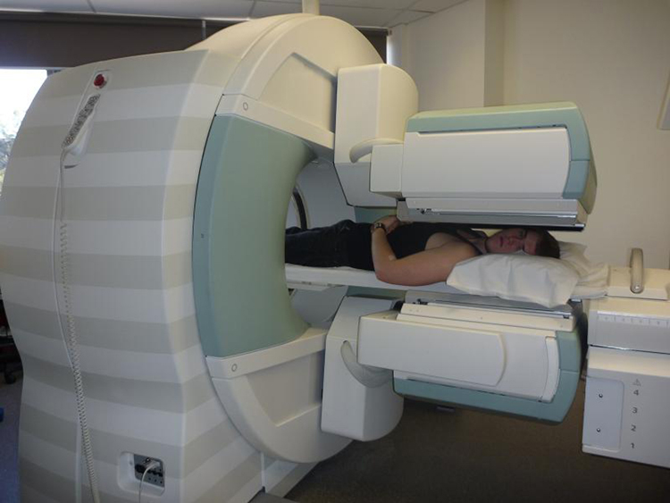
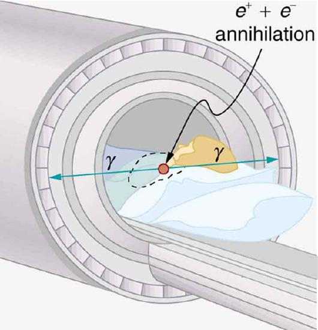
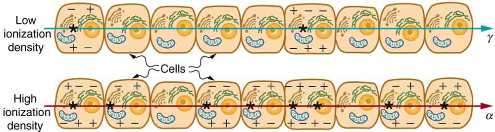
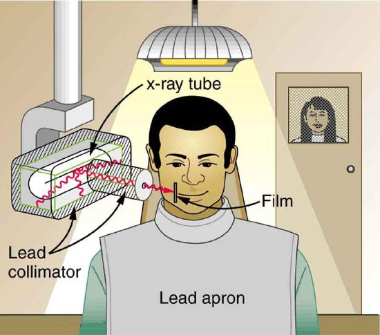
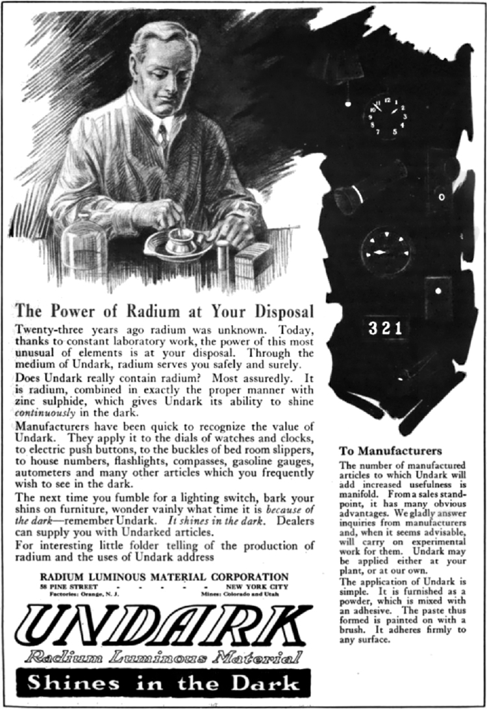
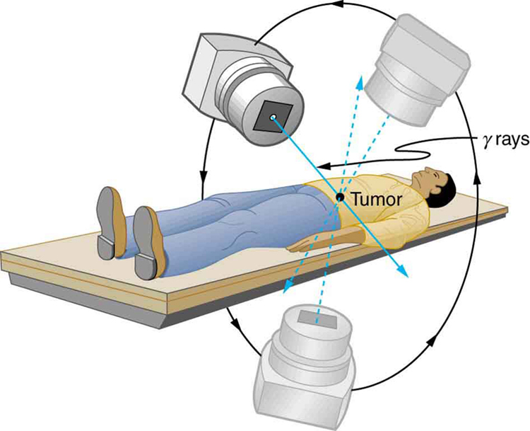

- Explain the working principle behind an anger camera.
- Describe the SPECT and PET imaging techniques.
A host of medical imaging techniques employ nuclear radiation. What makes nuclear radiation so useful? First, \(\gamma\) radiation can easily penetrate tissue; hence, it is a useful probe to monitor conditions inside the body. Second, nuclear radiation depends on the nuclide and not on the chemical compound it is in, so that a radioactive nuclide can be put into a compound designed for specific purposes. The compound is said to betagged. A tagged compound used for medical purposes is called aradiopharmaceutical. Radiation detectors external to the body can determine the location and concentration of a radiopharmaceutical to yield medically useful information. For example, certain drugs are concentrated in inflamed regions of the body, and this information can aid diagnosis and treatment as seen in Figure . Another application utilizes a radiopharmaceutical which the body sends to bone cells, particularly those that are most active, to detect cancerous tumors or healing points. Images can then be produced of such bone scans. Radioisotopes are also used to determine the functioning of body organs, such as blood flow, heart muscle activity, and iodine uptake in the thyroid gland.

#### Medical Application
Table lists certain medical diagnostic uses of radiopharmaceuticals, including isotopes and activities that are typically administered. Many organs can be imaged with a variety of nuclear isotopes replacing a stable element by a radioactive isotope. One common diagnostic employs iodine to image the thyroid, since iodine is concentrated in that organ. The most active thyroid cells, including cancerous cells, concentrate the most iodine and, therefore, emit the most radiation. Conversely, hypothyroidism is indicated by lack of iodine uptake. Note that there is more than one isotope that can be used for several types of scans. Another common nuclear diagnostic is the thallium scan for the cardiovascular system, particularly used to evaluate blockages in the coronary arteries and examine heart activity. The salt TlCl can be used, because it acts like NaCl and follows the blood. Gallium-67 accumulates where there is rapid cell growth, such as in tumors and sites of infection. Hence, it is useful in cancer imaging. Usually, the patient receives the injection one day and has a whole body scan 3 or 4 days later because it can take several days for the gallium to build up.
| Isotope | Typical activity (mCi), where \(1 \, mCi = 3.7 \times 10^7 \, Bq\) |
|---|---|
| Brain scan | |
| \(^{88m}Tc\) | 7.5 |
| \(^{113m}In\) | 7.5 |
| \(^{11}C\space (PET)\) | 20 |
| \(^{13}N \, (PET)\) | 20 |
| \(^{15}O \, (PET)\) | 50 |
| \(^{18}F \, (PET)\) | 10 |
| Lung scan | |
| \(^{99m}Tc\) | 2 |
| \(^{133}Xe\) | 7.5 |
| Cardiovascular blood pool | |
| \(^{131}I\) | 0.2 |
| \(^{99}Tc\) | 2 |
| Cardiovascular arterial flow | |
| \(^{201}Tl\) | 3 |
| \(^{24}Na\) | 7.5 |
| Thyroid scan | |
| \(^{131}I\) | 0.05 |
| \(^{123}I\) | 0.07 |
| Liver scan | |
| \(^{198}Au\) (colloid)\(^{99m}Tc\) (colloid) | 0.12 |
| Bone scan | |
| \(^{85}Sr\) | 0.1 |
| \(^{99m}Tc\) | 10 |
| Kidney scan | |
| \(^{197}Hg\) | 0.1 |
| \(^{99m}Tc\) | 1.5 |
Note that Table lists many diagnostic uses for \(^{99m}Tc\), where “m” stands for a metastable state of the technetium nucleus. Perhaps 80 percent of all radiopharmaceutical procedures employ \(^{99m}Tc\) because of its many advantages. One is that the decay of its metastable state produces a single, easily identified 0.142-MeV \(\gamma\) ray. Additionally, the radiation dose to the patient is limited by the short 6.0-h half-life of \(^{99m}Tc\). And, although its half-life is short, it is easily and continuously produced on site. The basic process for production is neutron activation of molybdenum, which quickly \(\beta\) decays into \(^{99m}Tc\). Technetium-99m can be attached to many compounds to allow the imaging of the skeleton, heart, lungs, kidneys, etc.
Figure shows one of the simpler methods of imaging the concentration of nuclear activity, employing a device called anAnger cameraorgamma camera. A piece of lead with holes bored through it collimates \(\gamma\) rays emerging from the patient, allowing detectors to receive \(\gamma\) rays from specific directions only. The computer analysis of detector signals produces an image. One of the disadvantages of this detection method is that there is no depth information (i.e., it provides a two-dimensional view of the tumor as opposed to a three-dimensional view), because radiation from any location under that detector produces a signal.

Imaging techniques much like those in x-ray computed tomography (CT) scans use nuclear activity in patients to form three-dimensional images. Figure shows a patient in a circular array of detectors that may be stationary or rotated, with detector output used by a computer to construct a detailed image. This technique is calledsingle-photon-emission computed tomography(SPECT)or sometimes simply SPET. The spatial resolution of this technique is poor, about 1 cm, but the contrast (i.e. the difference in visual properties that makes an object distinguishable from other objects and the background) is good.

Images produced by \(\beta^+\) emitters have become important in recent years. When the emitted positron (\(\beta^+\)) encounters an electron, mutual annihilation occurs, producing two \(\gamma\) rays. These \(\gamma\) rays have identical 0.511-MeV energies (the energy comes from the destruction of an electron or positron mass) and they move directly away from one another, allowing detectors to determine their point of origin accurately, as shown in Figure . The system is calledpositron emission tomography (PET). It requires detectors on opposite sides to simultaneously (i.e., at the same time) detect photons of 0.511-MeV energy and utilizes computer imaging techniques similar to those in SPECT and CT scans. Examples of \(\beta^+\)-emitting isotopes used in PET are \(^{11}O\), \(^{13}N\), \(^{15}O\) and \(^{18}F\), as seen in Table . This list includes C, N, and O, and so they have the advantage of being able to function as tags for natural body compounds. Its resolution of 0.5 cm is better than that of SPECT; the accuracy and sensitivity of PET scans make them useful for examining the brain’s anatomy and function. The brain’s use of oxygen and water can be monitored with \(^{15}O\). PET is used extensively for diagnosing brain disorders. It can note decreased metabolism in certain regions prior to a confirmation of Alzheimer’s disease. PET can locate regions in the brain that become active when a person carries out specific activities, such as speaking, closing their eyes, and so on.

PHET EXPLORATIONS: SIMPLIFIED MRI
Is it a tumor? Magnetic Resonance Imaging (MRI) can tell. Your head is full of tiny radio transmitters (the nuclear spins of the hydrogen nuclei of your water molecules). In an MRI unit, these little radios can be made to broadcast their positions, giving a detailed picture of the inside of your head.

📖 OpenStax College Physics, Section 32.01. openstax.org · CC BY 4.0
- Define various units of radiation.
- Describe RBE.
We hear many seemingly contradictory things about the biological effects of ionizing radiation. It can cause cancer, burns, and hair loss, yet it is used to treat and even cure cancer. How do we understand these effects? Once again, there is an underlying simplicity in nature, even in complicated biological organisms. All the effects of ionizing radiation on biological tissue can be understood by knowing thationizing radiation affects molecules within cells, particularly DNA molecules.
Let us take a brief look at molecules within cells and how cells operate. Cells have long, double-helical DNA molecules containing chemical codes called genetic codes that govern the function and processes undertaken by the cell. It is for unraveling the double-helical structure of DNA that James Watson, Francis Crick, and Maurice Wilkins received the Nobel Prize. Damage to DNA consists of breaks in chemical bonds or other changes in the structural features of the DNA chain, leading to changes in the genetic code. In human cells, we can have as many as a million individual instances of damage to DNA per cell per day. It is remarkable that DNA contains codes that check whether the DNA is damaged or can repair itself. It is like an auto check and repair mechanism. This repair ability of DNA is vital for maintaining the integrity of the genetic code and for the normal functioning of the entire organism. It should be constantly active and needs to respond rapidly. The rate of DNA repair depends on various factors such as the cell type and age of the cell. A cell with a damaged ability to repair DNA, which could have been induced by ionizing radiation, can do one of the following:
Since ionizing radiation damages the DNA, which is critical in cell reproduction, it has its greatest effect on cells that rapidly reproduce, including most types of cancer. Thus, cancer cells are more sensitive to radiation than normal cells and can be killed by it easily. Cancer is characterized by a malfunction of cell reproduction, and can also be caused by ionizing radiation. Without contradiction, ionizing radiation can be both a cure and a cause.
To discuss quantitatively the biological effects of ionizing radiation, we need a radiation dose unit that is directly related to those effects. All effects of radiation are assumed to be directly proportional to the amount of ionization produced in the biological organism. The amount of ionization is in turn proportional to the amount of deposited energy. Therefore, we define aradiation dose unitcalled therad, as \(1/100\) of a joule of ionizing energy deposited per kilogram of tissue, which is
For example, if a 50.0-kg person is exposed to ionizing radiation over her entire body and she absorbs 1.00 J, then her whole-body radiation dose is
If the same 1.00 J of ionizing energy were absorbed in her 2.00-kg forearm alone, then the dose to the forearm would be
and the unaffected tissue would have a zero rad dose. While calculating radiation doses, you divide the energy absorbed by the mass of affected tissue. You must specify the affected region, such as the whole body or forearm in addition to giving the numerical dose in rads. The SI unit for radiation dose is thegray (Gy), which is defined to be
However, the rad is still commonly used. Although the energy per kilogram in 1 rad is small, it has significant effects since the energy causes ionization. The energy needed for a single ionization is a few eV, or less than \(10^{-18} \, J\). Thus, 0.01 J of ionizing energy can create a huge number of ion pairs and have an effect at the cellular level.

The effects of ionizing radiation may be directly proportional to the dose in rads, but they also depend on the type of radiation and the type of tissue. That is, for a given dose in rads, the effects depend on whether the radiation is \(\alpha\), \(\beta\), \(\gamma\), x-ray, or some other type of ionizing radiation. In the earlier discussion of the range of ionizing radiation, it was noted that energy is deposited in a series of ionizations and not in a single interaction. Each ion pair or ionization requires a certain amount of energy, so that the number of ion pairs is directly proportional to the amount of the deposited ionizing energy. However, if the range of the radiation is small, as it is for \(\alpha\) paticles, then the ionization and the damage created is more concentrated and harder for the organism to repair, as seen in Figure . Concentrated damage is more difficult for biological organisms to repair than damage that is spread out, so short-range particles have greater biological effects. Therelative biological effectiveness(RBE)orquality factor(QF)is given in Table for several types of ionizing radiation—the effect of the radiation is directly proportional to the RBE. A dose unit more closely related to effects in biological tissue is called theroentgen equivalent manor rem and is defined to be the dose in rads multiplied by the relative biological effectiveness.
So, if a person had a whole-body dose of 2.00 rad of \(\gamma\) radiation, the dose in rem would be \(2.00 \, rad)(1) = 2.00 \, rem\) whole body. If the person had a whole-body dose of 2.00 rad of \(\alpha\) radiation, then the dose in rem would be \((2.00 \, rad)(20) = 40.0 \, rem\) whole body. The \(\alpha\) s would have 20 times the effect on the person than the \(\gamma\)s for the same deposited energy. The SI equivalent of the rem is thesievert(Sv), defined to be \(Sv = Gy \times RBE\), so that \[1 \, Sv = 1 \, Gy \times RBE = 100 \, rem.\]
| Type and energy of radiation | RBE1 |
|---|---|
| X-rays | 1 |
| \(\gamma\) rays | 1 |
| \(\beta\) rays greater than 32 keV | 1 |
| \(\beta\) rays less than 32 keV | 1.7 |
| Neutrons, thermal to slow (<20 keV) | 2–5 |
| Neutrons, fast (1–10 MeV) | 10 (body), 32 (eyes) |
| Protons (1–10 MeV) | 10 (body), 32 (eyes) |
| \(\alpha\) rays from radioactive decay | 10–20 |
| Heavy ions from accelerators | 10–20 |
The RBEs given in Table are approximate, but they yield certain insights. For example, the eyes are more sensitive to radiation, because the cells of the lens do not repair themselves. Neutrons cause more damage than \(\gamma\) rays, although both are neutral and have large ranges, because neutrons often cause secondary radiation when they are captured. Note that the RBEs are 1 for higher-energy \(\beta\)s, \(\gamma\)s, and x-rays, three of the most common types of radiation. For those types of radiation, the numerical values of the dose in rem and rad are identical. For example, 1 rad of \(\gamma\) radiation is also 1 rem. For that reason, rads are still widely quoted rather than rem. Table summarizes the units that are used for radiation.
Misconception Alert: Activity vs. Dose
“Activity” refers to the radioactive source while “dose” refers to the amount of energy from the radiation that is deposited in a person or object.
A high level of activity doesn’t mean much if a person is far away from the source. The activity \(R\) of a source depends upon the quantity of material (kg) as well as the half-life. A short half-life will produce many more disintegrations per second. Recall that \(R = \frac{0.693 N}{t_{1/2}}\). Also, the activity decreases exponentially, which is seen in the equation \(R = R_0e^{-\lambda t}\).
| Quantity | SI unit name | Definition | Former unit | Conversion |
|---|---|---|---|---|
| Activity | Becquerel (bq) | decay/sec | Curie (Ci) | \(1 \, Bq = 2.7 \times 10^{-11} \, Ci\) |
| Absorbed dose | Gray (Gy) | 1 J/kg | rad | \(Gy = 100 \, rad\) |
| Dose Equivalent | Sievert (Sv) | 1 J/kg × RBE | rem | \(Sv = 100 \, rem\) |
The large-scale effects of radiation on humans can be divided into two categories: immediate effects and long-term effects.Tablegives the immediate effects of whole-body exposures received in less than one day. If the radiation exposure is spread out over more time, greater doses are needed to cause the effects listed. This is due to the body’s ability to partially repair the damage. Any dose less than 100 mSv (10 rem) is called alow dose, 0.1 Sv to 1 Sv (10 to 100 rem) is called amoderate dose, and anything greater than 1 Sv (100 rem) is called ahigh dose. There is no known way to determine after the fact if a person has been exposed to less than 10 mSv.
| Dose in Sv2 | Effect |
|---|---|
| 0–0.10 | No observable effect. |
| 0.1 – 1 | Slight to moderate decrease in white blood cell counts. |
| 0.5 | Temporary sterility; 0.35 for women, 0.50 for men. |
| 1 – 2 | Significant reduction in blood cell counts, brief nausea and vomiting. Rarely fatal. |
| 2 – 5 | Nausea, vomiting, hair loss, severe blood damage, hemorrhage, fatalities. |
| 4.5 | LD50/32. Lethal to 50% of the population within 32 days after exposure if not treated. |
| 5 – 20 | Worst effects due to malfunction of small intestine and blood systems. Limited survival. |
| >20 | Fatal within hours due to collapse of central nervous system. |
Immediate effects are explained by the effects of radiation on cells and the sensitivity of rapidly reproducing cells to radiation. The first clue that a person has been exposed to radiation is a change in blood count, which is not surprising since blood cells are the most rapidly reproducing cells in the body. At higher doses, nausea and hair loss are observed, which may be due to interference with cell reproduction. Cells in the lining of the digestive system also rapidly reproduce, and their destruction causes nausea. When the growth of hair cells slows, the hair follicles become thin and break off. High doses cause significant cell death in all systems, but the lowest doses that cause fatalities do so by weakening the immune system through the loss of white blood cells.
The two known long-term effects of radiation are cancer and genetic defects. Both are directly attributable to the interference of radiation with cell reproduction. For high doses of radiation, the risk of cancer is reasonably well known from studies of exposed groups. Hiroshima and Nagasaki survivors and a smaller number of people exposed by their occupation, such as radium dial painters, have been fully documented. Chernobyl victims will be studied for many decades, with some data already available. For example, a significant increase in childhood thyroid cancer has been observed. The risk of a radiation-induced cancer for low and moderate doses is generallyassumedto be proportional to the risk known for high doses. Under this assumption, any dose of radiation, no matter how small, involves a risk to human health. This is called thelinear hypothesisand it may be prudent, but itiscontroversial. There is some evidence that, unlike the immediate effects of radiation, the long-term effects are cumulative and there is little self-repair. This is analogous to the risk of skin cancer from UV exposure, which is known to be cumulative.
There is a latency period for the onset of radiation-induced cancer of about 2 years for leukemia and 15 years for most other forms. The person is at risk for at least 30 years after the latency period. Omitting many details, the overall risk of a radiation-induced cancer death per year per rem of exposure is about 10 in a million, which can be written as \(10/10^6 \, rem \cdot y\).
If a person receives a dose of 1 rem, his risk each year of dying from radiation-induced cancer is 10 in a million and that risk continues for about 30 years. The lifetime risk is thus 300 in a million, or 0.03 percent. Since about 20 percent of all worldwide deaths are from cancer, the increase due to a 1 rem exposure is impossible to detect demographically. But 100 rem (1 Sv), which was the dose received by the average Hiroshima and Nagasaki survivor, causes a 3 percent risk, which can be observed in the presence of a 20 percent normal or natural incidence rate.
The incidence of genetic defects induced by radiation is about one-third that of cancer deaths, but is much more poorly known. The lifetime risk of a genetic defect due to a 1 rem exposure is about 100 in a million or \(3.3/10^6 \, rem \cdot y\), but the normal incidence is 60,000 in a million. Evidence of such a small increase, tragic as it is, is nearly impossible to obtain. For example, there is no evidence of increased genetic defects among the offspring of Hiroshima and Nagasaki survivors. Animal studies do not seem to correlate well with effects on humans and are not very helpful. For both cancer and genetic defects, the approach to safety has been to use the linear hypothesis, which is likely to be an overestimate of the risks of low doses. Certain researchers even claim that low doses arebeneficial.Hormesisis a term used to describe generally favorable biological responses to low exposures of toxins or radiation. Such low levels may help certain repair mechanisms to develop or enable cells to adapt to the effects of the low exposures. Positive effects may occur at low doses that could be a problem at high doses.
Even the linear hypothesis estimates of the risks are relatively small, and the average person is not exposed to large amounts of radiation.Tablelists average annual background radiation doses from natural and artificial sources for Australia, the United States, Germany, and world-wide averages. Cosmic rays are partially shielded by the atmosphere, and the dose depends upon altitude and latitude, but the average is about 0.40 mSv/y. A good example of the variation of cosmic radiation dose with altitude comes from the airline industry. Monitored personnel show an average of 2 mSv/y. A 12-hour flight might give you an exposure of 0.02 to 0.03 mSv.
Doses from the Earth itself are mainly due to the isotopes of uranium, thorium, and potassium, and vary greatly by location. Some places have great natural concentrations of uranium and thorium, yielding doses ten times as high as the average value. Internal doses come from foods and liquids that we ingest. Fertilizers containing phosphates have potassium and uranium. So we are all a little radioactive. Carbon-14 has about 66 Bq/kg radioactivity whereas fertilizers may have more than 3000 Bq/kg radioactivity. Medical and dental diagnostic exposures are mostly from x-rays. It should be noted that x-ray doses tend to be localized and are becoming much smaller with improved techniques.Tableshows typical doses received during various diagnostic x-ray examinations. Note the large dose from a CT scan. While CT scans only account for less than 20 percent of the x-ray procedures done today, they account for about 50 percent of the annual dose received.
Radon is usually more pronounced underground and in buildings with low air exchange with the outside world. Almost all soil contains some \(^{226}Ra\) and \(^{222}Rn\), but radon is lower in mainly sedimentary soils and higher in granite soils. Thus, the exposure to the public can vary greatly, even within short distances. Radon can diffuse from the soil into homes, especially basements. The estimated exposure for \(^{222}Rn\) is controversial. Recent studies indicate there is more radon in homes than had been realized, and it is speculated that radon may be responsible for 20 percent of lung cancers, being particularly hazardous to those who also smoke. Many countries have introduced limits on allowable radon concentrations in indoor air, often requiring the measurement of radon concentrations in a house prior to its sale. Ironically, it could be argued that the higher levels of radon exposure and their geographic variability, taken with the lack of demographic evidence of any effects, means that low-level radiation islessdangerous than previously thought.
Laws regulate radiation doses to which people can be exposed. The greatest occupational whole-body dose that is allowed depends upon the country and is about 20 to 50 mSv/y and is rarely reached by medical and nuclear power workers. Higher doses are allowed for the hands. Much lower doses are permitted for the reproductive organs and the fetuses of pregnant women. Inadvertent doses to the public are limited to \(1/10\) of occupational doses, except for those caused by nuclear power, which cannot legally expose the public to more than \(1/1000\) of the occupational limit or 0.05 mSv/y (5 mrem/y). This has been exceeded in the United States only at the time of the Three Mile Island (TMI) accident in 1979. Chernobyl is another story. Extensive monitoring with a variety of radiation detectors is performed to assure radiation safety. Increased ventilation in uranium mines has lowered the dose there to about 1 mSv/y.
| Source | Dose (mSv/y)3 | Dose (mSv/y)3 | Dose (mSv/y)3 | Dose (mSv/y)3 |
|---|---|---|---|---|
| Source | Australia | Germany | United States | World |
| Natural Radiation - external | ||||
| Cosmic Rays | 0.30 | 0.28 | 0.30 | 0.39 |
| Soil, building materials | 0.40 | 0.40 | 0.30 | 0.48 |
| Radon gas | 0.90 | 1.1 | 2.0 | 1.2 |
| Natural Radiation - internal | ||||
| \(^{40}K\), \(^{14}C\), \(^{226}Ra\) | 0.24 | 0.28 | 0.40 | 0.29 |
| Medical & Dental | 0.80 | 0.90 | 0.53 | 0.40 |
| TOTAL | 2.6 | 3.0 | 3.5 | 2.8 |
To physically limit radiation doses, we useshielding, increase thedistancefrom a source, and limit thetime of exposure.
Figure illustrates how these are used to protect both the patient and the dental technician when an x-ray is taken. Shielding absorbs radiation and can be provided by any material, including sufficient air. The greater the distance from the source, the more the radiation spreads out. The less time a person is exposed to a given source, the smaller is the dose received by the person. Doses from most medical diagnostics have decreased in recent years due to faster films that require less exposure time.

| Procedure | Effective dose (mSv) |
|---|---|
| Chest | 0.02 |
| Dental | 0.01 |
| Skull | 0.07 |
| Leg | 0.02 |
| Mammogram | 0.40 |
| Barium enema | 7.0 |
| Upper GI | 3.0 |
| CT head | 2.0 |
| CT abdomen | 10.0 |
You need to follow certain steps for dose calculations, which are
Calculate the dose in rem/y for the lungs of a weapons plant employee who inhales and retains an activity of \(1.00 \, \mu Ci\) of \(^{239}Pu\) in an accident. The mass of affected lung tissue is 2.00 kg, the plutonium decays by emission of a 5.23-MeV \(\alpha\) particle, and you may assume the higher value of the RBE for \(\alpha\)s fromTable.
Dose in rem is defined by \(1 \, rad = 0.01 \, J/kg\) and \(rem = rad \times RBE\). The energy deposited is divided by the mass of tissue affected and then multiplied by the RBE. The latter two quantities are given, and so the main task in this example will be to find the energy deposited in one year. Since the activity of the source is given, we can calculate the number of decays, multiply by the energy per decay, and convert MeV to joules to get the total energy.
The activity \(R = 1.00 \, \mu Ci = 3.70 \times 10^4 \, Bq = 3.70 \times 10^4\) decays/s. So, the number of decays per year is obtained by multiplying by the number of seconds in a year:
Thus, the ionizing energy deposited per year is
Dividing by the mass of the affected tissue gives
One Gray is 1.00 J/kg, and so the dose in Gy is
Now, the dose in Sv is \[dose \, in Sv = Gy \times RBE\]\[= (0.489 \, Gy)(20) = 9.8 \, Sv.\]
First note that the dose is given to two digits, because the RBE is (at best) known only to two digits. By any standard, this yearly radiation dose is high and will have a devastating effect on the health of the worker. Worse yet, plutonium has a long radioactive half-life and is not readily eliminated by the body, and so it will remain in the lungs. Being an \(\alpha\) emitter makes the effects 10 to 20 times worse than the same ionization produced by \(\beta\)s, \(\gamma\) rays, or x-rays. An activity of \(1.00 \, \mu Ci\) is created by only \(16 \, \mu g\) of \(^{239}Pu\) (left as an end-of-chapter problem to verify), partly justifying claims that plutonium is the most toxic substance known. Its actual hazard depends on how likely it is to be spread out among a large population and then ingested. The Chernobyl disaster’s deadly legacy, for example, has nothing to do with the plutonium it put into the environment.
Medical doses of radiation are also limited. Diagnostic doses are generally low and have further lowered with improved techniques and faster films. With the possible exception of routine dental x-rays, radiation is used diagnostically only when needed so that the low risk is justified by the benefit of the diagnosis. Chest x-rays give the lowest doses—about 0.1 mSv to the tissue affected, with less than 5 percent scattering into tissues that are not directly imaged. Other x-ray procedures range upward to about 10 mSv in a CT scan, and about 5 mSv (0.5 rem) per dental x-ray, again both only affecting the tissue imaged. Medical images with radiopharmaceuticals give doses ranging from 1 to 5 mSv, usually localized. One exception is the thyroid scan using \(^{131}I\). Because of its relatively long half-life, it exposes the thyroid to about 0.75 Sv. The isotope \(^{123}I\) is more difficult to produce, but its short half-life limits thyroid exposure to about 15 mSv.
PHET EXPLORATIONS: ALPHA DECAY
Watch alpha particles escape from a polonium nucleus, causing radioactive alpha decay. See how random decay times relate to the half life.

1Values approximate, difficult to determine.
2Multiply by 100 to obtain dose in rem.
3Multiply by 100 to obtain dose in mrem/y.
📖 OpenStax College Physics, Section 32.02. openstax.org · CC BY 4.0
- Explain the concept of radiotherapy and list typical doses for cancer therapy.
Therapeutic applications of ionizing radiation, called radiation therapy orradiotherapy, have existed since the discovery of x-rays and nuclear radioactivity. Today, radiotherapy is used almost exclusively for cancer therapy, where it saves thousands of lives and improves the quality of life and longevity of many it cannot save. Radiotherapy may be used alone or in combination with surgery and chemotherapy (drug treatment) depending on the type of cancer and the response of the patient. A careful examination of all available data has established that radiotherapy’s beneficial effects far outweigh its long-term risks.
The earliest uses of ionizing radiation on humans were mostly harmful, with many at the level of snake oil as seen inFigure. Radium-doped cosmetics that glowed in the dark were used around the time of World War I. As recently as the 1950s, radon mine tours were promoted as healthful and rejuvenating—those who toured were exposed but gained no benefits. Radium salts were sold as health elixirs for many years. The gruesome death of a wealthy industrialist, who became psychologically addicted to the brew, alerted the unsuspecting to the dangers of radium salt elixirs. Most abuses finally ended after the legislation in the 1950s.

Radiotherapy is effective against cancer because cancer cells reproduce rapidly and, consequently, are more sensitive to radiation. The central problem in radiotherapy is to make the dose for cancer cells as high as possible while limiting the dose for normal cells. The ratio of abnormal cells killed to normal cells killed is called thetherapeutic ratio, and all radiotherapy techniques are designed to enhance this ratio. Radiation can be concentrated in cancerous tissue by a number of techniques. One of the most prevalent techniques for well-defined tumors is a geometric technique shown inFigure. A narrow beam of radiation is passed through the patient from a variety of directions with a common crossing point in the tumor. This concentrates the dose in the tumor while spreading it out over a large volume of normal tissue. The external radiation can be x-rays, \(^{60}Co\) \(\gamma\) rays, or ionizing-particle beams produced by accelerators. Accelerator-produced beams of neutrons, \(\pi -mesons\), and heavy ions such as nitrogen nuclei have been employed, and these can be quite effective. These particles have larger QFs or RBEs and sometimes can be better localized, producing a greater therapeutic ratio. But accelerator radiotherapy is much more expensive and less frequently employed than other forms.

Another form of radiotherapy uses chemically inert radioactive implants. One use is for prostate cancer. Radioactive seeds (about 40 to 100 and the size of a grain of rice) are placed in the prostate region. The isotopes used are usually \(^{135}I\) (6-month half life) or \(^{103}Pd\) (3-month half life). Alpha emitters have the dual advantages of a large QF and a small range for better localization.
Radiopharmaceuticals are used for cancer therapy when they can be localized well enough to produce a favorable therapeutic ratio. Thyroid cancer is commonly treated utilizing radioactive iodine. Thyroid cells concentrate iodine, and cancerous thyroid cells are more aggressive in doing this. An ingenious use of radiopharmaceuticals in cancer therapy tags antibodies with radioisotopes. Antibodies produced by a patient to combat his cancer are extracted, cultured, loaded with a radioisotope, and then returned to the patient. The antibodies are concentrated almost entirely in the tissue they developed to fight, thus localizing the radiation in abnormal tissue. The therapeutic ratio can be quite high for short-range radiation. There is, however, a significant dose for organs that eliminate radiopharmaceuticals from the body, such as the liver, kidneys, and bladder. As with most radiotherapy, the technique is limited by the tolerable amount of damage to the normal tissue.
Tablelists typical therapeutic doses of radiation used against certain cancers. The doses are large, but not fatal because they are localized and spread out in time. Protocols for treatment vary with the type of cancer and the condition and response of the patient. Three to five 200-rem treatments per week for a period of several weeks is typical. Time between treatments allows the body to repair normal tissue. This effect occurs because damage is concentrated in the abnormal tissue, and the abnormal tissue is more sensitive to radiation. Damage to normal tissue limits the doses. You will note that the greatest doses are given to any tissue that is not rapidly reproducing, such as in the adult brain. Lung cancer, on the other end of the scale, cannot ordinarily be cured with radiation because of the sensitivity of lung tissue and blood to radiation. But radiotherapy for lung cancer does alleviate symptoms and prolong life and is therefore justified in some cases.
| Type of Cancer | Typical dose (Sv) |
|---|---|
| Lung | 10–20 |
| Hodgkin’s disease | 40–45 |
| Skin | 40–50 |
| Ovarian | 50–75 |
| Breast | 50–80+ |
| Brain | 80+ |
| Neck | 80+ |
| Bone | 80+ |
| Soft tissue | 80+ |
| Thyroid | 80+ |
Finally, it is interesting to note that chemotherapy employs drugs that interfere with cell division and is, thus, also effective against cancer. It also has almost the same side effects, such as nausea and hair loss, and risks, such as the inducement of another cancer.
📖 OpenStax College Physics, Section 32.03. openstax.org · CC BY 4.0
| Section | Title |
|---|---|
| 32.01 | 32.1: Medical Imaging and Diagnostics |
| 32.02 | 32.2: Biological Effects of Ionizing Radiation |
| 32.03 | 32.3: Therapeutic Uses of Ionizing Radiation |